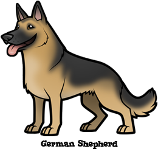

If I could visit anywhere, I would go to Bora Bora. Here, the water is unbelievably blue and the beaches are infinite.
A person I admire is my mother. She is the most selfless and loving person that I know.
My favorite animal would definitely be a dog - specifically, a German Shepherd. They are so sweet, loyal, and happy.
